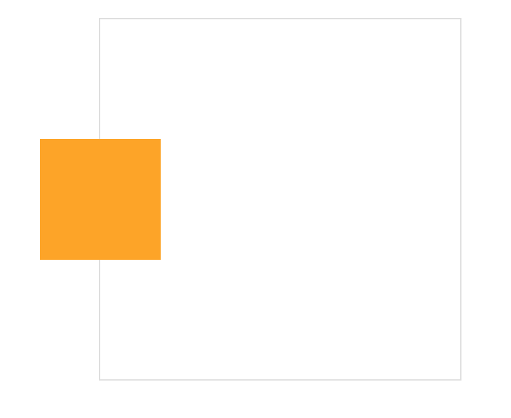
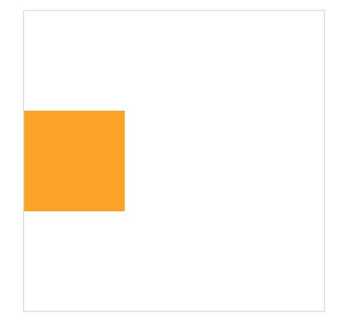

<!DOCTYPE HTML>
<html lang="" >
    <head>
        <meta charset="UTF-8">
        <meta content="text/html; charset=utf-8" http-equiv="Content-Type">
        <title>transform使元素居中的bug · GitBook</title>
        <meta http-equiv="X-UA-Compatible" content="IE=edge" />
        <meta name="description" content="">
        <meta name="generator" content="GitBook 3.2.3">
        
        
        
    
    <link rel="stylesheet" href="../gitbook/style.css">

    
            
                
                <link rel="stylesheet" href="../gitbook/gitbook-plugin-highlight/website.css">
                
            
                
                <link rel="stylesheet" href="../gitbook/gitbook-plugin-search/search.css">
                
            
                
                <link rel="stylesheet" href="../gitbook/gitbook-plugin-fontsettings/website.css">
                
            
        

    

    
        
    
        
    
        
    
        
    
        
    
        
    

        
    
    
    <meta name="HandheldFriendly" content="true"/>
    <meta name="viewport" content="width=device-width, initial-scale=1, user-scalable=no">
    <meta name="apple-mobile-web-app-capable" content="yes">
    <meta name="apple-mobile-web-app-status-bar-style" content="black">
    <link rel="apple-touch-icon-precomposed" sizes="152x152" href="../gitbook/images/apple-touch-icon-precomposed-152.png">
    <link rel="shortcut icon" href="../gitbook/images/favicon.ico" type="image/x-icon">

    
    <link rel="next" href="../添加.gitignore文件.html" />
    
    
    <link rel="prev" href="css中的font-family的样式.html" />
    

    </head>
    <body>
        
<div class="book">
    <div class="book-summary">
        
            
<div id="book-search-input" role="search">
    <input type="text" placeholder="Type to search" />
</div>

            
                <nav role="navigation">
                


<ul class="summary">
    
    

    

    
        
        
    
        <li class="chapter " data-level="1.1" data-path="../">
            
                <a href="../">
            
                    
                    Introduction
            
                </a>
            

            
        </li>
    
        <li class="chapter " data-level="1.2" data-path="../vue/">
            
                <a href="../vue/">
            
                    
                    vue
            
                </a>
            

            
            <ul class="articles">
                
    
        <li class="chapter " data-level="1.2.1" data-path="../vue/vueBootstrap.html">
            
                <a href="../vue/vueBootstrap.html">
            
                    
                    在vue中引入bootstrap和jquery
            
                </a>
            

            
        </li>
    
        <li class="chapter " data-level="1.2.2" data-path="../vue/alliIconfont.html">
            
                <a href="../vue/alliIconfont.html">
            
                    
                    在vue中引入阿里图标
            
                </a>
            

            
        </li>
    
        <li class="chapter " data-level="1.2.3" data-path="../vue/vue中引入外部css文件.html">
            
                <a href="../vue/vue中引入外部css文件.html">
            
                    
                    在vue中引入外部css文件
            
                </a>
            

            
        </li>
    
        <li class="chapter " data-level="1.2.4" data-path="../vue/vue中父子组件之间的通信.html">
            
                <a href="../vue/vue中父子组件之间的通信.html">
            
                    
                    vue中父子组件之间的通信
            
                </a>
            

            
        </li>
    
        <li class="chapter " data-level="1.2.5" data-path="../vue/基于vue的modal实现.html">
            
                <a href="../vue/基于vue的modal实现.html">
            
                    
                    基于vue的modal实现
            
                </a>
            

            
        </li>
    
        <li class="chapter " data-level="1.2.6" data-path="../vue/vue监听路由的变化.html">
            
                <a href="../vue/vue监听路由的变化.html">
            
                    
                    vue监听路由的变化
            
                </a>
            

            
        </li>
    

            </ul>
            
        </li>
    
        <li class="chapter " data-level="1.3" data-path="../js/">
            
                <a href="../js/">
            
                    
                    js
            
                </a>
            

            
            <ul class="articles">
                
    
        <li class="chapter " data-level="1.3.1" data-path="../js/浏览器窗口的滚动条的位置.html">
            
                <a href="../js/浏览器窗口的滚动条的位置.html">
            
                    
                    浏览器窗口的滚动条的位置
            
                </a>
            

            
        </li>
    
        <li class="chapter " data-level="1.3.2" data-path="../js/导航条的背景变色.html">
            
                <a href="../js/导航条的背景变色.html">
            
                    
                    当浏览器窗口的滚动条变化，导航条的背景变色
            
                </a>
            

            
        </li>
    
        <li class="chapter " data-level="1.3.3" data-path="../js/实现打字效果的js插件typed.js.html">
            
                <a href="../js/实现打字效果的js插件typed.js.html">
            
                    
                    实现打字效果的js插件typed.js
            
                </a>
            

            
        </li>
    
        <li class="chapter " data-level="1.3.4" data-path="../js/js设置滚动条的位置.html">
            
                <a href="../js/js设置滚动条的位置.html">
            
                    
                    js设置滚动条的位置
            
                </a>
            

            
        </li>
    

            </ul>
            
        </li>
    
        <li class="chapter " data-level="1.4" data-path="../h5/">
            
                <a href="../h5/">
            
                    
                    h5
            
                </a>
            

            
            <ul class="articles">
                
    
        <li class="chapter " data-level="1.4.1" data-path="../h5/figure.html">
            
                <a href="../h5/figure.html">
            
                    
                    figure标签的使用
            
                </a>
            

            
        </li>
    
        <li class="chapter " data-level="1.4.2" data-path="../h5/比较好的响应式的网站.html">
            
                <a href="../h5/比较好的响应式的网站.html">
            
                    
                    比较好的响应式的网站
            
                </a>
            

            
        </li>
    
        <li class="chapter " data-level="1.4.3" data-path="../h5/响应式图片img中的srcset和sizes.html">
            
                <a href="../h5/响应式图片img中的srcset和sizes.html">
            
                    
                    响应式图片img中的srcset和sizes
            
                </a>
            

            
        </li>
    

            </ul>
            
        </li>
    
        <li class="chapter " data-level="1.5" data-path="./">
            
                <a href="./">
            
                    
                    css
            
                </a>
            

            
            <ul class="articles">
                
    
        <li class="chapter " data-level="1.5.1" data-path="waterBorderRadius.html">
            
                <a href="waterBorderRadius.html">
            
                    
                    基于vue的模拟gitbook的右下角的评论按钮
            
                </a>
            

            
        </li>
    
        <li class="chapter " data-level="1.5.2" data-path="transtion属性.html">
            
                <a href="transtion属性.html">
            
                    
                    css中的transition属性
            
                </a>
            

            
        </li>
    
        <li class="chapter " data-level="1.5.3" data-path="position和transform使元素居中的方法.html">
            
                <a href="position和transform使元素居中的方法.html">
            
                    
                    position和transform使元素居中的方法 (转载)
            
                </a>
            

            
        </li>
    
        <li class="chapter " data-level="1.5.4" data-path="box-shadow样式.html">
            
                <a href="box-shadow样式.html">
            
                    
                    box-shadow的样式
            
                </a>
            

            
        </li>
    
        <li class="chapter " data-level="1.5.5" data-path="backgroundLinearGradient线性渐变.html">
            
                <a href="backgroundLinearGradient线性渐变.html">
            
                    
                    backgroundLinearGradient线性渐变
            
                </a>
            

            
        </li>
    
        <li class="chapter " data-level="1.5.6" data-path="modal-background.html">
            
                <a href="modal-background.html">
            
                    
                    自己写modal背景实现效果
            
                </a>
            

            
        </li>
    
        <li class="chapter " data-level="1.5.7" data-path="font-sizez中的vw.html">
            
                <a href="font-sizez中的vw.html">
            
                    
                    font-sizez中的vw
            
                </a>
            

            
        </li>
    
        <li class="chapter " data-level="1.5.8" data-path="css3中的媒体查询.html">
            
                <a href="css3中的媒体查询.html">
            
                    
                    css3中的媒体查询
            
                </a>
            

            
        </li>
    
        <li class="chapter " data-level="1.5.9" data-path="css中的em单位.html">
            
                <a href="css中的em单位.html">
            
                    
                    css中的em单位
            
                </a>
            

            
        </li>
    
        <li class="chapter " data-level="1.5.10" data-path="css清除浮动的float的三种方法.html">
            
                <a href="css清除浮动的float的三种方法.html">
            
                    
                    css清除浮动的float的三种方法（转载）
            
                </a>
            

            
        </li>
    
        <li class="chapter " data-level="1.5.11" data-path="font-family设置字体上下显示.html">
            
                <a href="font-family设置字体上下显示.html">
            
                    
                    font-family设置字体上下显示
            
                </a>
            

            
        </li>
    
        <li class="chapter " data-level="1.5.12" data-path="css中的font-family的样式.html">
            
                <a href="css中的font-family的样式.html">
            
                    
                    css中的font-family的样式，引入Google Fonts
            
                </a>
            

            
        </li>
    
        <li class="chapter active" data-level="1.5.13" data-path="transform使元素居中的bug.html">
            
                <a href="transform使元素居中的bug.html">
            
                    
                    transform使元素居中的bug
            
                </a>
            

            
        </li>
    

            </ul>
            
        </li>
    
        <li class="chapter " data-level="1.6" data-path="../添加.gitignore文件.html">
            
                <a href="../添加.gitignore文件.html">
            
                    
                    添加.gitignore文件
            
                </a>
            

            
        </li>
    
        <li class="chapter " data-level="1.7" data-path="GreenSockTweenMax.html">
            
                <a href="GreenSockTweenMax.html">
            
                    
                    GreenSock (TweenMax)极简入门指南
            
                </a>
            

            
        </li>
    

    

    <li class="divider"></li>

    <li>
        <a href="https://www.gitbook.com" target="blank" class="gitbook-link">
            Published with GitBook
        </a>
    </li>
</ul>


                </nav>
            
        
    </div>

    <div class="book-body">
        
            <div class="body-inner">
                
                    

<div class="book-header" role="navigation">
    

    <!-- Title -->
    <h1>
        <i class="fa fa-circle-o-notch fa-spin"></i>
        <a href=".." >transform使元素居中的bug</a>
    </h1>
</div>


                    <div class="page-wrapper" tabindex="-1" role="main">
                        <div class="page-inner">
                            
<div id="book-search-results">
    <div class="search-noresults">
    
                                <section class="normal markdown-section">
                                
                                <h5 id="&#x7528;transform&#x4F7F;&#x5143;&#x7D20;&#x5C45;&#x4E2D;&#x7684;bug">&#x7528;transform&#x4F7F;&#x5143;&#x7D20;&#x5C45;&#x4E2D;&#x7684;bug</h5>
<p>&#x901A;&#x8FC7;position&#x548C;transform&#x4F7F;&#x5143;&#x7D20;&#x5C45;&#x4E2D;:
html:</p>
<pre><code>&lt;div class=&quot;box&quot; @click=&apos;move&apos; id=&apos;box&apos;&gt;&lt;/div&gt;
</code></pre><p>css:</p>
<pre><code>.box{
  width: 6.25em;
  height: 6.25em;
  position: absolute;
  top: 50%;
  left: 50%;
  transform: translate3d(-50%, -50%, 0);
  background: orange;
  transition: all 1s ease;
}
</code></pre><p></p>
<p>bug:</p>
<p>&#x8981;&#x662F;&#x8BA9;div<code>left: 0;</code>&#xFF0C;div.box&#x53EA;&#x663E;&#x793A;&#x4E00;&#x534A;,&#x51FA;&#x53BB;&#x4E00;&#x534A;&#x3002;&#x662F;&#x56E0;&#x4E3A;&#x5728;<code>transform: translate3d(-50%, -50%, 0)</code>&#xFF0C;&#x8FD9;&#x4E2A;&#x65F6;&#x5019;&#x53EF;&#x4EE5;&#x901A;&#x8FC7;&#x5B9A;&#x4E49;&#x5143;&#x7D20;&#x7684;translateX&#x7684;&#x503C;&#x6765;&#x4FEE;&#x6B63;&#x8FD9;&#x4E2A;&#x5C0F;bug&#x3002;</p>
<p></p>
<p>&#x89E3;&#x51B3;&#x65B9;&#x6CD5;&#xFF1A;</p>
<p>&#x5728;&#x8BA9;div.box&#x7684;<code>left = 0</code>&#x7684;&#x65F6;&#x5019;&#xFF0C;&#x8BA9;<code>transform: translate3d(0, -50%, 0)</code>&#x3002;&#x5728;methods&#x4E2D;:</p>
<pre><code>move() {
   var box = document.getElementById(&apos;box&apos;)
   box.style.left = 0;
   box.style.transform = &apos;translate3d(0, -50%,0)&apos;;
}
</code></pre><p>&#x5168;&#x90E8;&#x4EE3;&#x7801;&#xFF1A;</p>
<pre><code>&lt;template&gt;
  &lt;div class=&quot;transformLeft0Bug&quot;&gt;
   &lt;div class=&quot;box&quot; @click=&apos;move&apos; id=&apos;box&apos;&gt;&lt;/div&gt;
  &lt;/div&gt;
&lt;/template&gt;
&lt;script&gt;
export default {
  name: &quot;transformLeft0Bug&quot;,
  data: () =&gt; ({
  }),
  methods: {
    move() {
       var box = document.getElementById(&apos;box&apos;)
       box.style.left = 0;
       box.style.transform = &apos;translate3d(0, -50%,0)&apos;;
    }
  }
}
&lt;/script&gt;
&lt;style lang=&quot;scss&quot; scoped&gt;
.transformLeft0Bug{
  width: 18.75em;
  height: 18.75em;
  position: relative;
  margin-left: 20em;
  margin-top: 1.25em;
  border: 0.0625em solid #ddd;
  .box{
    width: 6.25em;
    height: 6.25em;
    position: absolute;
    top: 50%;
    left: 50%;
    transform: translate3d(-50%, -50%, 0);
    background: orange;
    transition: all 1s ease;
  }
}
&lt;/style&gt;
</code></pre><p></p>

                                
                                </section>
                            
    </div>
    <div class="search-results">
        <div class="has-results">
            
            <h1 class="search-results-title"><span class='search-results-count'></span> results matching "<span class='search-query'></span>"</h1>
            <ul class="search-results-list"></ul>
            
        </div>
        <div class="no-results">
            
            <h1 class="search-results-title">No results matching "<span class='search-query'></span>"</h1>
            
        </div>
    </div>
</div>

                        </div>
                    </div>
                
            </div>

            
                
                <a href="css中的font-family的样式.html" class="navigation navigation-prev " aria-label="Previous page: css中的font-family的样式，引入Google Fonts">
                    <i class="fa fa-angle-left"></i>
                </a>
                
                
                <a href="../添加.gitignore文件.html" class="navigation navigation-next " aria-label="Next page: 添加.gitignore文件">
                    <i class="fa fa-angle-right"></i>
                </a>
                
            
        
    </div>

    <script>
        var gitbook = gitbook || [];
        gitbook.push(function() {
            gitbook.page.hasChanged({"page":{"title":"\btransform使元素居中的bug","level":"1.5.13","depth":2,"next":{"title":"添加.gitignore文件","level":"1.6","depth":1,"path":"添加.gitignore文件.md","ref":"添加.gitignore文件.md","articles":[]},"previous":{"title":"\bcss中的font-family的样式，引入Google Fonts","level":"1.5.12","depth":2,"path":"css/css中的font-family的样式.md","ref":"css/css中的font-family的样式.md","articles":[]},"dir":"ltr"},"config":{"gitbook":"*","theme":"default","variables":{},"plugins":["livereload"],"pluginsConfig":{"livereload":{},"highlight":{},"search":{},"lunr":{"maxIndexSize":1000000,"ignoreSpecialCharacters":false},"sharing":{"facebook":true,"twitter":true,"google":false,"weibo":false,"instapaper":false,"vk":false,"all":["facebook","google","twitter","weibo","instapaper"]},"fontsettings":{"theme":"white","family":"sans","size":2},"theme-default":{"styles":{"website":"styles/website.css","pdf":"styles/pdf.css","epub":"styles/epub.css","mobi":"styles/mobi.css","ebook":"styles/ebook.css","print":"styles/print.css"},"showLevel":false}},"structure":{"langs":"LANGS.md","readme":"README.md","glossary":"GLOSSARY.md","summary":"SUMMARY.md"},"pdf":{"pageNumbers":true,"fontSize":12,"fontFamily":"Arial","paperSize":"a4","chapterMark":"pagebreak","pageBreaksBefore":"/","margin":{"right":62,"left":62,"top":56,"bottom":56}},"styles":{"website":"styles/website.css","pdf":"styles/pdf.css","epub":"styles/epub.css","mobi":"styles/mobi.css","ebook":"styles/ebook.css","print":"styles/print.css"}},"file":{"path":"css/transform使元素居中的bug.md","mtime":"2018-08-02T09:51:05.000Z","type":"markdown"},"gitbook":{"version":"3.2.3","time":"2018-08-21T03:45:54.815Z"},"basePath":"..","book":{"language":""}});
        });
    </script>
</div>

        
    <script src="../gitbook/gitbook.js"></script>
    <script src="../gitbook/theme.js"></script>
    
        
        <script src="../gitbook/gitbook-plugin-livereload/plugin.js"></script>
        
    
        
        <script src="../gitbook/gitbook-plugin-search/search-engine.js"></script>
        
    
        
        <script src="../gitbook/gitbook-plugin-search/search.js"></script>
        
    
        
        <script src="../gitbook/gitbook-plugin-lunr/lunr.min.js"></script>
        
    
        
        <script src="../gitbook/gitbook-plugin-lunr/search-lunr.js"></script>
        
    
        
        <script src="../gitbook/gitbook-plugin-sharing/buttons.js"></script>
        
    
        
        <script src="../gitbook/gitbook-plugin-fontsettings/fontsettings.js"></script>
        
    

    </body>
</html>

